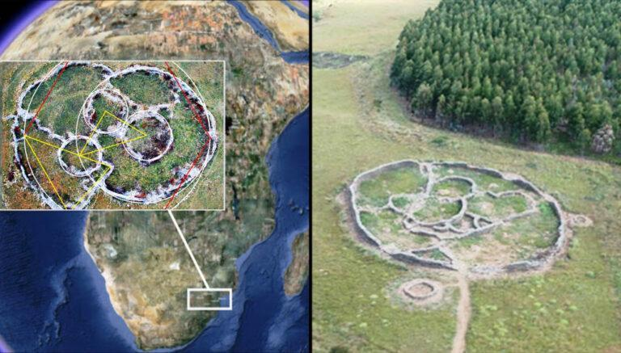
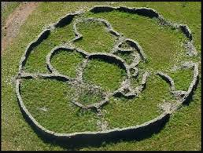
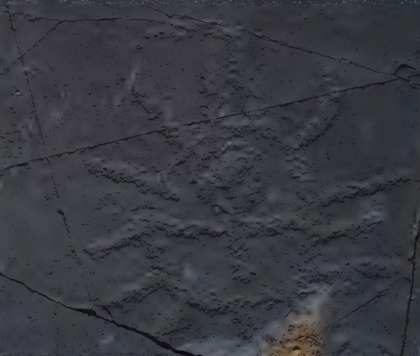
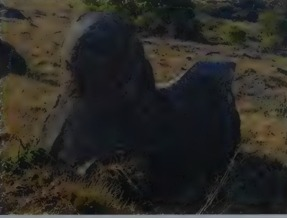
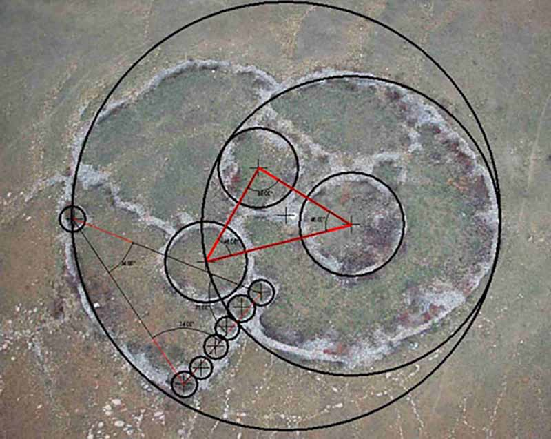
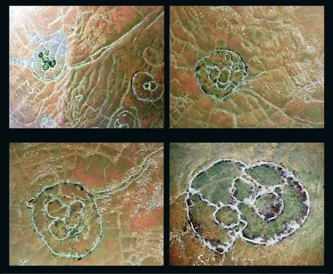

ADAM'S CALENDAR

class="section-image">Introduction
Africa now boasts a vast variety of historical sites that can convey tales of long-forgotten cultures and people. The 75,000-year-old Adam’s Calendar believed to be create by Bokoni people in South Africa is one of these remarkable historical sites
Adam’s Calendar Africa’s Stonehenge Is The Oldest Astronomical Map: Considered The Oldest astronomical map "Stone objects and charcoal remains date to 5,000, 46,000, and 60,000 B.C. Scientist now believe that mining technology was used in Southern Africa before 100,000 B.C
Literary

Credo Mutua describes Adam's Calendar as the holiest site on Earth, where Heaven and Mother Earth were united. It is also called Inzalo yi Langa in Zulu, meaning "cradle of the sun." African knowledge keepers believe this is where the gods created the first humans. Papa Credo began here in 1937. Adam's Calendar is a well-known sacred site among sangomas and shamans. Numerous references in Sumerian tablets describe how Enki built himself a special place of observation deep within the Abzu. It was on the edge of a cliff, in the footsteps of his dwelling to the north—thought to have been Great Zimbabwe—and the great pyramids of Egypt, referred to as the "Twin Peaks." (This reference to pyramids may be a reference to the mysterious pyramids in the valley below. When Adam's Calendar was constructed, the pyramids at Giza were probably not yet built.) No other place fits this description better than Adam's Calendar—a special place of observation. All the evidence leads to this conclusion. On a more spiritual level, some spirit mediums have claimed that it was indeed a place built by Enki. In a special television program on the Afrikaans channel Kyknet, which explored sacred sites in South Africa, a spirit medium revealed that this was the oldest place on Earth, built even before the existence of humans.
The evidence comes in the form of colossal monoliths, petroglyphs, and symbols discovered in Mpumalanga and other parts of South Africa, previously thought to be of Sumerian and Egyptian origin. The conclusions are based not only on the many compelling artifacts collected and the astonishing ages attributed to them, but also on the text of the Sumerian tablets themselves. These tablets are the oldest written record of human history; the constant reference to South Africa leaves no doubt that there was much activity in this region long before the founding of Sumer or Egypt. The tablets make it abundantly clear that the first civilization emerged thousands of years ago in a land they called ABZU—the land of the first peoples of South Africa—where the gold came from.
the ancient civilizations that existed here in South Africa; his assertions caused many so-called educated scholars to scoff. When Johan Heine discovered the ancient stone calendar (Adam’s Calendar) at Kaapsche Hoop in South Africa in 2003, as you will see in the “Adam’s Calendar” chapter, he could never have imagined that this would be the spark that started the sudden emergence of archaeological proof to vindicate the statements of Baba Credo Mutwa.
There are various other theories as to the origins of the Blaauboschkraal stone ruins. Some subscribe to both the Bakoni viewpoint and Adams Calendar, arguing the two are unrelated. There are also theories that these South African stone circles were astrological clocks built by descendants of ancient India’s Dravidian peoples.
Adam’s Calendar is just one of the thousands of sites scattered throughout so called Sub Saharan Africa, proving that without shadow of doubt, the Bantu promised land is the land of the beginning, and the blueprint of creation, that’s why ancient people called Alkebulan; which means the garden of Eden. Even ancient Egyptians and Cushites called the land below the equator “the birth of humanity and the holies of holies”
Some connect this to the Sumerian concept of "Abzu," the underworld rich in water and minerals—and they say that Abzu was South Africa itself, where the first gold mining on Earth took place.
Some Sufis and practitioners of "geomancy" say that Adam's Calendar emits energy vibrations or "cosmic frequencies" linked to the sun or the Earth's magnetic fields. They describe it as an "energy portal" or a "point of connection between worlds."
It is said that the stones are aligned with specific solar and stellar positions, such as Orion or Capricorn. It has been described as "the world's oldest active astronomical calendar".
Some theories link "Adam's Calendar" to: the Pyramids of Giza, Stonehenge in Britain, and the lost civilization of Atlantis. They claim that all of them were built within a global network of "energy points" on Ley Lines.
This interest is deeply rooted in ancient Southern African traditions. According to Credo Mutwa, various star tribes in Africa possess profound astronomical knowledge. The Ndebele people, for example, hold ancient knowledge of the star Mbopo in the constellation Orion—the distant constellation, or Umhlabi. The meticulous research conducted by Johan Heine in the Adam's Calendar project has shown that these ancient civilizations in the south were connected to the stars long before any other civilization.
Many bloggers promote the idea that there was a single, unified global ancient civilization, and that all these sites were part of one sophisticated calendrical system. According to this view, "Adam's Calendar" is an early or original version, while Stonehenge and r Göbekli Tepe are merely branches or reconstructions of the same knowledge across continents.All these places suggest that the ancients knew the sun and stars far better than we imagine; perhaps there was a single civilization that flourished before the flood or a great catastrophe."
Some comments link the "Calendar of Adam" to Adam as a historical/symbolic figure, with bloggers suggesting that Adam "laid the foundations" for knowledge of astronomy and agriculture. Stonehenge and Göbekli Tepe, according to them, inherited this knowledge through successive generations of humans. This myth implicitly suggests that ancient calendars were not local in origin but came from a single, divine or semi-divine source.
There are stories that say all these sites were part of a system to preserve knowledge before a global flood or cosmic catastrophe. The explanation is that these sites were designed to preserve astronomical observations and agricultural knowledge after the collapse of a civilization.
Inscription
The site is also possibly the only existing example of a mostly intact and fully functional megalithic stone calendar in the world. The stones used in the site are all dolomite, and weigh up to 5 tonnes each, and are believed to have been brought from a distant place.
The site consists of an outer stone circle around 30 meters (98 feet) in diameter. Inside the circle are several monoliths, arranged in a complex pattern. The general layout of the site appears to have been built in astronomical alignments, making the site a calendar.
There are other structures and stone circles surrounding the site which are built with complementary alignments, connected by a series of channels. Researchers believe these channels are rough roads to give access to Adam’s Calendar. These channels do not just connect to Adam’s Calendar but also many other ruins and ancient agricultural terraces in the landscape
Two upright stones lie at the center of the circle with carvings upon them. These stones, as well as much of the building materials, appear to have been transported from a distance. The original shape of this calendar site is still discernable from aerial images, although not immediately obvious at ground level
In Tellinger's books (such as Slave Species of God), it is claimed that the "Anunnaki" (extraterrestrial beings from Sumerian mythology) created this site as a monitoring center or a place for gold mining in South Africa.
One of the many stone walls that still stands close to 3 meters high. A section of a large ruin with a diameter of 150 meters. A carved stone that resembles a human head stands close by, as if it were part of some kind of ritual. Many strange and inexplicable carved shapes of stone are found scattered among the ruins, accompanied by hundreds of unusual stone tools that were previously not recognized as such.
Egyptian ankh

An Egyptian ankh carved into a glacier slab at Dreikopseiland, South Africa. This petroglyph is worth a thousand words: the ankh is inside a radiating circle, suggesting that the Lord of Light has the key to eternal life. It also suggests that the secret lies in the frequency of light or is linked to some kind of vibrational energy that combines sound and light. This knowledge would be consistent with the circular ruins of southern Africa that were used to generate energy by using sound and possibly also light. This understanding of the flow of energy in sound and light was rediscovered by Keely, Tesla, and Rife, among others, in the late nineteenth century.
Horus falcon
The stories and stones of Adam's Calendar tell tales not told in history books. They connect the earliest peoples of southern Africa to Egyptian civilization. This site contains the first statue of the Horus falcon, made famous by Egyptology. This statue is likely over 200,000 years old. Our calculations for the alignment of Orion's belt seem to lean in this direction. Notice the broken nose or beak of the Horus bird resting on the side of the mountain. The remarkable age of this statue is evidence that the Egyptians borrowed many of their core symbols from the early peoples of southern Africa.
The Sphinx

The first Sphinx statue stands proudly near the ceremonial path in Adam's Calendar. This recent discovery provides further crucial evidence regarding the origins of some of the most important symbols in human history. These symbols did not originate in Egypt or Sumer, but in South Africa.
He describes the rock as "a lion's head or a sphinx overlooking the valley to the east, just like the Sphinx in Giza." According to him, the rock is not entirely natural, but was partially carved. It represented a god or a sacred symbol of the Abzu (the underworld/southern land). This suggests that symbols such as the lion and the sphinx did not originate in Egypt but were later transferred from there to the north.
They connect the statue to what is called Abzu in Sumerian mythology—the land located south of the equator, where gold was abundant. It is believed that the Anunnaki (extraterrestrial beings or ancient gods) came to South Africa before Egypt and Sumer, and that these statues were part of their rituals. Adam's Calendar was an astronomical and ritualistic observatory, and rock formations like the Sphinx statue were markers or symbols associated with this ancient civilization.
The Skull
Tylinger says that the cracks and deep erosion on its surface are evidence of its immense age, exceeding hundreds of thousands of years, and that it was used in "sacred rituals" described to him by the Zulu sage Credo Mutwa.
The Skull stone. One of the many monoliths that show signs of severe erosion. Geologists agree that this kind of erosion would take many hundreds of thousands of years to occur. This one eroded much faster because it was part of the ritual initiation ceremony outlined to me by Credo Mutwa. The initiates were required to urinate on this stone. Nevertheless, erosion of the dolerite stones is a good indicator of the real age of the site.
David Icke used the "Skull Stone" image in some of his lectures after 2010 as an example of "ancient reptilian symbols." He sees it as a symbolic representation of the Reptilian Overlords whom people worshipped as gods. He says the massive, distorted skull shape resembles the heads of mythological reptilian beings. He doesn't discuss geological erosion, but instead focuses on the symbolic meaning: "the head of ancient wisdom buried in the earth."
Some believe that the stone may have been carved by hand and then eroded over time until it took the shape of a skull. The erosion caused by urine and rituals contributed to its current form. It represents the "ancient consciousness" or "buried wisdom" of the Anunnaki ancestors.
Some people link it to the legend of the "Skull of Knowledge" found in ancient African myths.
Some writers (such as independent researcher Ralph Ellis) suggest that the rock may be 100% natural but was deliberately chosen for a ritualistic site because it resembles a head. This is a known practice in ancient cultures—selecting natural formations with religious symbolism without carving them. Therefore, it is neither an artificial artifact nor a "real skull," but rather a natural symbol with spiritual meaning.
Research

An air crash involving one of his crew brought Johan to discover the mysterious monolithic circle by accident. On route to find one of his pilots who crashed his plane on the edge of the cliff, Johan noticed an arrangement of large stones sticking out of the ground next to the crash site. While rescuing the injured pilot down the side of the cliff, Johan walked over to the monoliths and realized they were aligned to the cardinal points – north, south, east and west – as well as the equinoxes and solstices. There were at least 3 monoliths aligned towards the sunrise, but on the west side of the aligned monoliths there was a strange hole in the ground. After weeks and months of measuring and making observations, Johan suspected it was a stone calendar.
The site is aptly named Adam’s Calendar because the stones are placed to track the movement of the sun, which casts shadows on the rock. It still works perfectly as a calendar today by following the shadow of the setting sun, which is cast by the taller central monolith onto the flat stone beside it. This remarkable calendar was originally a large circular stone structure resembling Stonehenge and in the center of the ‘circle’ are two upright stones which are said to have been carved. Its original shape is still clearly visible from satellite images. The stones are all dolomite, weighing up to 5 tons each, and are said to have been transported from a distant site. It should be noted that the area surrounding Adam’s Calendar is extremely rich in gold. Several mining shafts have been reported in the area with one of the richest working mines in the world today being the Sheba Gold Mine, located in Mpumalanga. Not only did the rich gold reefs attract attention in the 1880’s, but the early evidence of historic civilizations mining for minerals were described in writings by the early Europeans.
Blaauboschkraal stone ruins also called Adam’s Calendar is estimated to be more than 75,000 years old, according to historians. The development of Adam’s Calendar is likewise thought to have occurred tens of thousands of years before the Great Pyramid of Giza and Stonehenge.
Adam’s Calendar is a standing stone circle about 30 meters in diameter located in Mpumalanga, South Africa.
Several astronomical alignments have been discovered at the site, and it is thought to be the world’s only fully functional, mostly intact megalithic stone calendar
In this corner of the earth, the initial estimate was around 4,000. The figure had climbed to 20,000 by 1974. The number of these old stone ruins is estimated to be 100,000 or much more now.
The latest and most interesting discovery of the stone circles and Adam’s Calendar is the sound frequencies of the rock formations from the earth below them. With modern technology, Tellinger and scientists have been able to detect and measure sound frequencies with acoustic properties made from the earth inside the circles which conduct electricity. These sound frequencies of the earth under the stones are shaped as flowers of sacred geometry as they surface to the ground.
Some of these “stone circles” had no doors or entrances, while the majority are connected by a vast network of channels that historians frequently misunderstand as “roads.”
This connected grid of circular ruins are immersed in a seemingly never-ending expanse of old agricultural terraces around the structures. Among these ruins, Adam’s Calendar is considered the most famous.
Southern Africa holds some of the deepest mysteries in all of human history. What we are told is that at over 100,000 years ago the early humans migrated from Africa and populated the rest of the world.
It estimated that there are well over 1,000,000 (one million) ancient stone ruins scattered throughout the mountains of southern Africa. Various tools and artifacts that have been recovered from these ruins show a long and extended period of settlement that spans well over 200,000 years
Known by African elders, as the “The Birthplace of The Sun” or “Inzalo y’Langa”, the site was first brought to public attention in 2003 by South African pilot Johan Heine. He had been flying over the mountains of Mpumalanga, South Africa for over 20 years and took an interest in the thousands of strange circular stone objects scattered throughout the region and began photographing them. In consulting experts on their origins, he was informed that they were the remains of “cattle kraal” (livestock enclosure) left behind by the Bantu people when they migrated from the north around the 14th century. Today this theory seems far from definitive as the structures are unlike any other Bantu cattle-kraal designs, which are usually made of thorny shrubs, with a single entrance/exit for the cattle. There are also several thousand of them spread over tens of thousands of miles.
